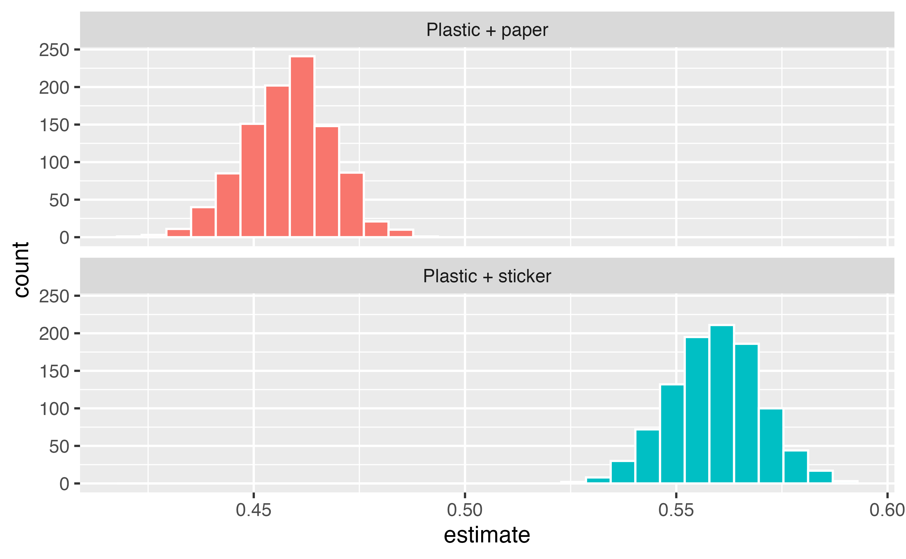
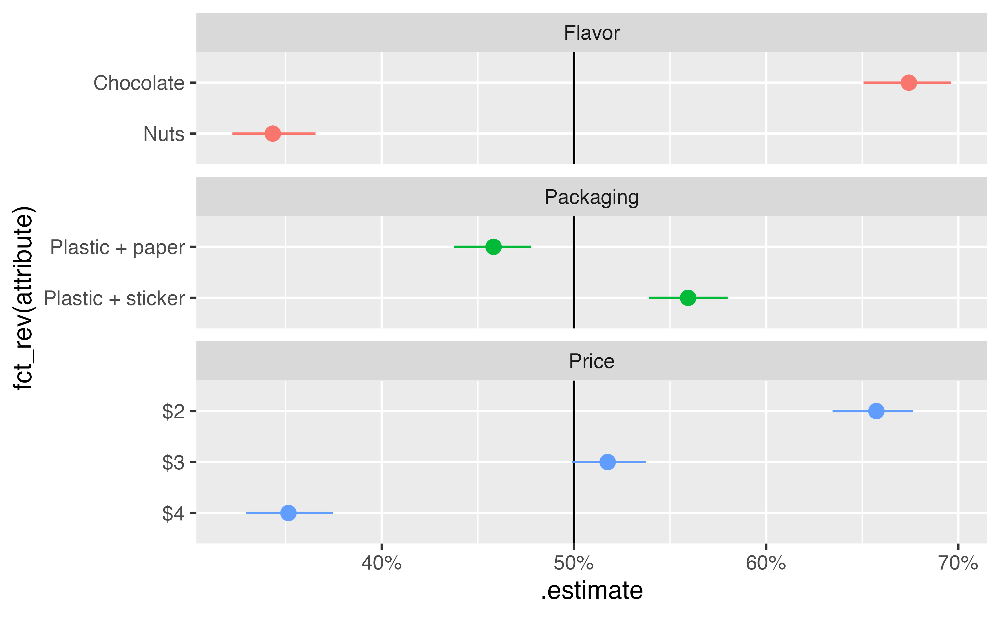
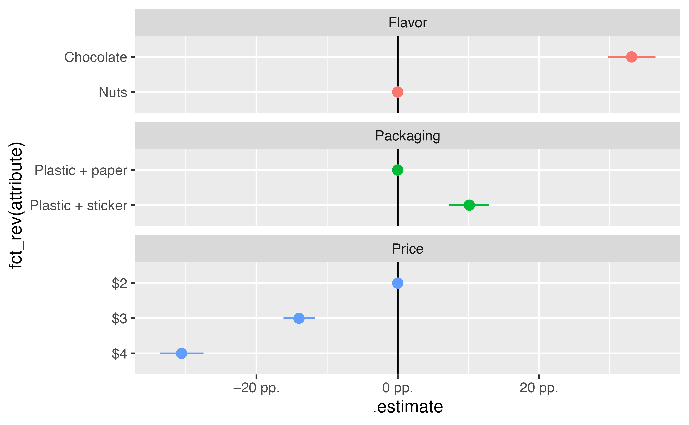
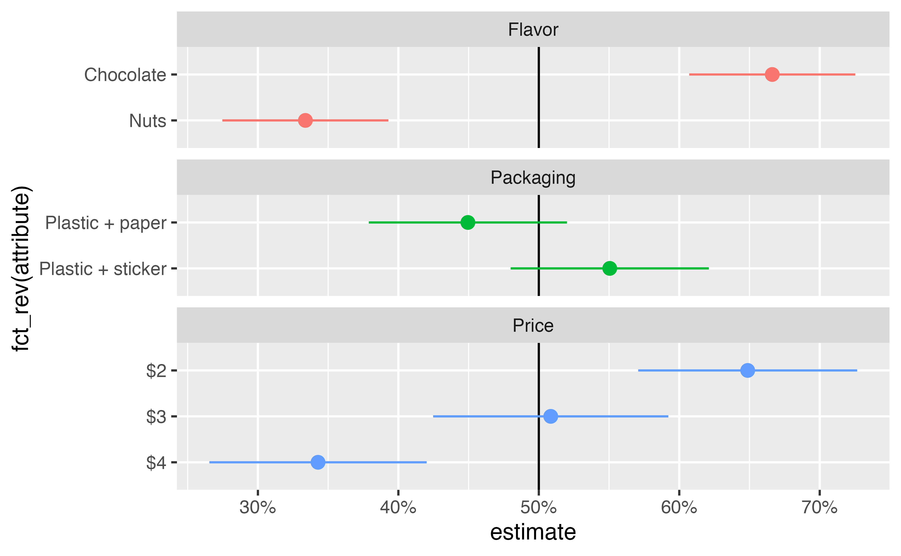
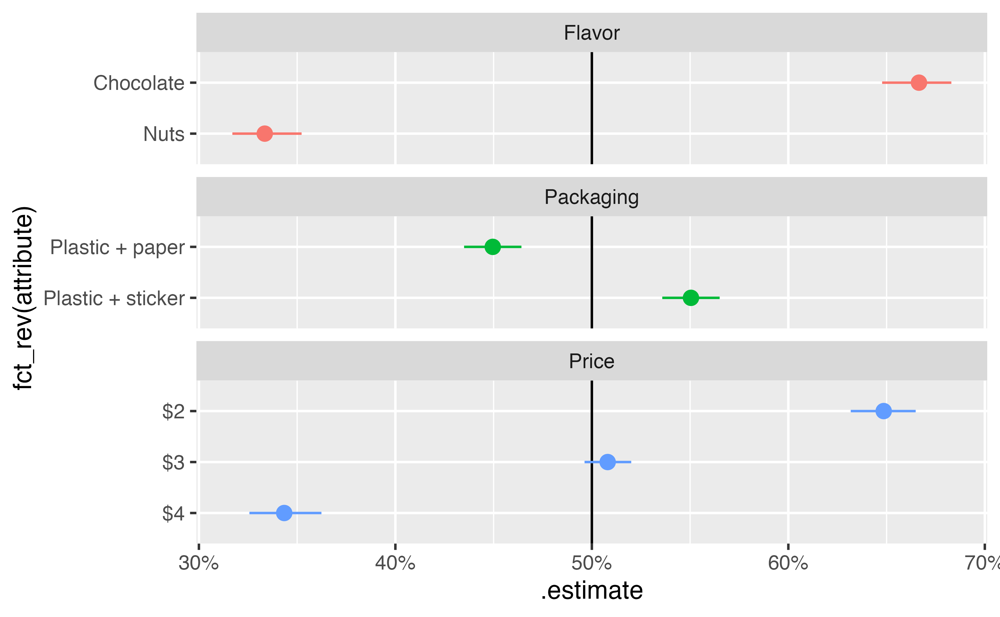

library(tidyverse)
library(mlogit)
library(marginaleffects)
library(parameters)
library(tinytable)
library(scales)
library(ggforce)
stickers <- readRDS("data/processed_data/study_5_sticker.rds")
label_pp <- scales::label_number(
accuracy = 1, scale = 100, suffix = " pp.", style_negative = "minus"
)8 MMs and AMCEs with frequentist multinomial regression
8.1 Model
It is also possible to use a multinomial logistic regression model that matches the distribution of the choice outcome variable. This can be done with a variety of R packages, including {mlogit}, {mclogit}, {logitr}, and {nnet}. Each behave slightly differently, requiring modifications to the data structure or needing additional post-processing work.
| Package | Data restructuring | Supports {marginaleffects}? | Allows for random effects? |
|---|---|---|---|
| {mlogit} | Requires an indexed data frame made with dfidx() |
No | Yes, with rpar argument |
| {mclogit} | Requires a unique choice ID index | Yes | Yes, with random argument |
| {logitr} | Requires a unique choice ID index | No | Yes, with randPars argument |
| {nnet} | None | Yes | No |
{mlogit} needs to work with an indexed data frame (created with dfidx()) that keeps track of the nested choices within respondents:
stickers_indexed <- stickers |>
group_by(resp_id, question) |>
mutate(choice_id = cur_group_id()) |>
ungroup() |>
as.data.frame() |> # mlogit() complains and breaks when working with tibbles :(
dfidx(
idx = list(c("choice_id", "resp_id"), "alt"),
choice = "choice"
)It then uses R’s standard formula syntax to define the model:
model_mlogit <- mlogit(
choice ~ price + packaging + flavor | 0,
data = stickers_indexed
)
model_parameters(model_mlogit, verbose = FALSE)Parameter | Log-Odds | SE | 95% CI | z | p
----------------------------------------------------------------------------------
price [$3] | -0.74 | 0.07 | [-0.87, -0.60] | -10.79 | < .001
price [$4] | -1.61 | 0.08 | [-1.76, -1.46] | -21.26 | < .001
packaging [Plastic + sticker] | 0.54 | 0.05 | [ 0.44, 0.64] | 10.24 | < .001
flavor [Nuts] | -1.69 | 0.06 | [-1.81, -1.58] | -27.81 | < .001{mclogit} does not need an official indexed data frame, but it does need a unique identifer for each possible choice:
stickers_mclogit <- stickers |>
group_by(resp_id, question) |>
mutate(choice_id = cur_group_id()) |>
ungroup()
head(stickers_mclogit)# A tibble: 6 × 12
condition resp_id question alt gender age chosen_alt price packaging flavor choice choice_id
<chr> <dbl> <dbl> <dbl> <chr> <dbl> <dbl> <fct> <fct> <fct> <dbl> <int>
1 Sticker 4 1 1 Female 19 1 $3 Plastic + sticker Chocolate 1 1
2 Sticker 4 1 2 Female 19 1 $2 Plastic + paper Nuts 0 1
3 Sticker 4 2 1 Female 19 2 $3 Plastic + sticker Nuts 0 2
4 Sticker 4 2 2 Female 19 2 $2 Plastic + paper Chocolate 1 2
5 Sticker 4 3 1 Female 19 1 $4 Plastic + paper Chocolate 1 3
6 Sticker 4 3 2 Female 19 1 $2 Plastic + sticker Chocolate 0 3We can again use R’s formula syntax, but we need to specify two parts in the left-hand side: the binary choice variable and the set of choices it is nested in:
library(mclogit)
model_mclogit <- mclogit(
choice | choice_id ~ price + packaging + flavor,
data = stickers_mclogit
)model_parameters(model_mclogit, verbose = FALSE)Parameter | Log-Odds | SE | 95% CI | z | p
----------------------------------------------------------------------------------
price [$3] | -0.74 | 0.07 | [-0.87, -0.60] | -10.79 | < .001
price [$4] | -1.61 | 0.08 | [-1.76, -1.46] | -21.26 | < .001
packaging [Plastic + sticker] | 0.54 | 0.05 | [ 0.44, 0.64] | 10.24 | < .001
flavor [Nuts] | -1.69 | 0.06 | [-1.81, -1.58] | -27.81 | < .001{logitr}
stickers_logitr <- stickers |>
group_by(resp_id, question) |>
mutate(choice_id = cur_group_id()) |>
ungroup()
head(stickers_logitr)# A tibble: 6 × 12
condition resp_id question alt gender age chosen_alt price packaging flavor choice choice_id
<chr> <dbl> <dbl> <dbl> <chr> <dbl> <dbl> <fct> <fct> <fct> <dbl> <int>
1 Sticker 4 1 1 Female 19 1 $3 Plastic + sticker Chocolate 1 1
2 Sticker 4 1 2 Female 19 1 $2 Plastic + paper Nuts 0 1
3 Sticker 4 2 1 Female 19 2 $3 Plastic + sticker Nuts 0 2
4 Sticker 4 2 2 Female 19 2 $2 Plastic + paper Chocolate 1 2
5 Sticker 4 3 1 Female 19 1 $4 Plastic + paper Chocolate 1 3
6 Sticker 4 3 2 Female 19 1 $2 Plastic + sticker Chocolate 0 3library(logitr)
model_logitr <- logitr(
data = stickers_logitr,
outcome = "choice",
obsID = "choice_id",
pars = c("price", "packaging", "flavor")
)model_parameters(model_logitr, verbose = FALSE)Parameter | Log-Odds | SE | 95% CI | z | p
----------------------------------------------------------------------------------
price [$3] | -0.74 | 0.07 | [-0.87, -0.60] | -10.79 | < .001
price [$4] | -1.61 | 0.08 | [-1.76, -1.46] | -21.26 | < .001
packaging [Plastic + sticker] | 0.54 | 0.05 | [ 0.44, 0.64] | 10.24 | < .001
flavor [Nuts] | -1.69 | 0.06 | [-1.81, -1.58] | -27.81 | < .001{nnet} requires no indexing or question identifiers, which also means that it pools all the observations together and disregards the nested structure of the data.
library(nnet)
model_nnet <- multinom(
choice ~ price + packaging + flavor,
data = stickers
){mlogit} is the oldest and most commonly used multinomial regression package and is the basis for many conjoint textbooks [@Feit], so I’ll illustrate how to use it to calculate MMs and AMCEs. {marginaleffects} does not support {mlogit} models because of the idiosyncracies its prediction functions, so the process requires a little manual work.
8.2 Marginal means
To calculate marginal means, we need to generate predicted probabilities across a balanced grid of all conjoint features. This is a little trickier to do with multinomial {mlogit} models, though. {mlogit}’s predict() function requires that any new data passed to it include a row for each alternative (alt in the original data), since it will generate predictions for each alternative.
For example, if we only feed one combination of conjoint features to predict(), we’ll get an error:
newdata_example_bad <- stickers |>
slice(1) |>
select(price, packaging, flavor)
newdata_example_bad# A tibble: 1 × 3
price packaging flavor
<fct> <fct> <fct>
1 $3 Plastic + sticker Chocolatepredict(model_mlogit, newdata = newdata_example_bad)Error in predict.mlogit(model_mlogit, newdata = newdata_example_bad): the number of rows of the data.frame should be a multiple of the number of alternativesInstead, because respondents were presented with two alternatives at a time, we need to feed predict() a data frame with two alternatives.
# The first two questions seen by two respondents
newdata_example <- stickers |>
filter(resp_id %in% c(4, 6), question == 1) |>
select(resp_id, price, packaging, flavor, alt)
newdata_example# A tibble: 4 × 5
resp_id price packaging flavor alt
<dbl> <fct> <fct> <fct> <dbl>
1 4 $3 Plastic + sticker Chocolate 1
2 4 $2 Plastic + paper Nuts 2
3 6 $4 Plastic + paper Chocolate 1
4 6 $2 Plastic + sticker Chocolate 2predict(model_mlogit, newdata = newdata_example) 1 2
1 0.8173 0.1827
2 0.1043 0.8957predict() returns a matrix of probabilities, with one row per respondent and one column for each alternative. In this case, respondent 4 had an 83% chance of choosing the $3 + sticker + chocolate alternative when presented alongside a $2 + paper + nuts alternative, while respondent 6 had an 11% chance of choosing the $4 + paper + chocolate alternative when presented alongside a $2 + sticker + chocolate alternative.
To make a balanced grid of feature attributes, we need to create a grid of all 12 unique combinations (3 prices, 2 packagings, 2 flavors = 3 × 2 × 2 = 12) paired with evert other unique combination of features. This requires a bit of data manipulation, including cross_join() which combines each row from the 12-row feature grid with each row from itself, resulting in 144 (12 × 12) rows. We then remove the 12 rows where the two alternatives are identical, resulting in a grid of 132 possible pairs of alternatives:
feature_grid <- stickers |>
tidyr::expand(price, packaging, flavor)
# Use cross_join to combine every row from the feature grid with itself
paired_grid <- feature_grid |>
cross_join(
feature_grid |>
rename(
price_alt2 = price,
packaging_alt2 = packaging,
flavor_alt2 = flavor
)
) |>
# Remove rows where both alternatives are identical
filter(
!(price == price_alt2 &
packaging == packaging_alt2 &
flavor == flavor_alt2)
) |>
# Create unique choice_id identifier
mutate(choice_id = row_number())
paired_grid# A tibble: 132 × 7
price packaging flavor price_alt2 packaging_alt2 flavor_alt2 choice_id
<fct> <fct> <fct> <fct> <fct> <fct> <int>
1 $2 Plastic + paper Chocolate $2 Plastic + paper Nuts 1
2 $2 Plastic + paper Chocolate $2 Plastic + sticker Chocolate 2
3 $2 Plastic + paper Chocolate $2 Plastic + sticker Nuts 3
4 $2 Plastic + paper Chocolate $3 Plastic + paper Chocolate 4
5 $2 Plastic + paper Chocolate $3 Plastic + paper Nuts 5
6 $2 Plastic + paper Chocolate $3 Plastic + sticker Chocolate 6
7 $2 Plastic + paper Chocolate $3 Plastic + sticker Nuts 7
8 $2 Plastic + paper Chocolate $4 Plastic + paper Chocolate 8
9 $2 Plastic + paper Chocolate $4 Plastic + paper Nuts 9
10 $2 Plastic + paper Chocolate $4 Plastic + sticker Chocolate 10
# ℹ 122 more rows{mlogit} requires long data for predictions, so we can stack the two alternatives on top of each other, resulting in a data frame with 264 rows (132 × 2):
paired_grid_long <- bind_rows(
# Alternative 1
paired_grid |>
select(choice_id, price, packaging, flavor) |>
mutate(alt = 1),
# Alternative 2
paired_grid |>
select(
choice_id,
price = price_alt2,
packaging = packaging_alt2,
flavor = flavor_alt2
) |>
mutate(alt = 2)
) |>
arrange(choice_id, alt)
paired_grid_long# A tibble: 264 × 5
choice_id price packaging flavor alt
<int> <fct> <fct> <fct> <dbl>
1 1 $2 Plastic + paper Chocolate 1
2 1 $2 Plastic + paper Nuts 2
3 2 $2 Plastic + paper Chocolate 1
4 2 $2 Plastic + sticker Chocolate 2
5 3 $2 Plastic + paper Chocolate 1
6 3 $2 Plastic + sticker Nuts 2
7 4 $2 Plastic + paper Chocolate 1
8 4 $3 Plastic + paper Chocolate 2
9 5 $2 Plastic + paper Chocolate 1
10 5 $3 Plastic + paper Nuts 2
# ℹ 254 more rowsFinally, we can generate predictions with this long data frame of all pairs of all combinations:
predictions <- predict(model_mlogit, newdata = paired_grid_long)
head(predictions) 1 2
1 0.8449 0.15514
2 0.3680 0.63198
3 0.7603 0.23973
4 0.6765 0.32351
5 0.9193 0.08072
6 0.5491 0.45092predict() returns a matrix with 2 columns, but we’re only really interested in one of them—we have a balanced grid of all possible pairs and only need to look at one half of each pair.
We can collapse this set of 132 predictions into the original balanced 12-row grid by calculating group specific means for price, packing, and flavor:
preds_grid_mlogit <- paired_grid_long |>
filter(alt == 1) |>
mutate(probability = predictions[,1]) |>
group_by(price, packaging, flavor) |>
summarize(estimate = mean(probability))`summarise()` has grouped output by 'price', 'packaging'. You can override using the `.groups` argument.preds_grid_mlogit# A tibble: 12 × 4
# Groups: price, packaging [6]
price packaging flavor estimate
<fct> <fct> <fct> <dbl>
1 $2 Plastic + paper Chocolate 0.770
2 $2 Plastic + paper Nuts 0.428
3 $2 Plastic + sticker Chocolate 0.853
4 $2 Plastic + sticker Nuts 0.544
5 $3 Plastic + paper Chocolate 0.631
6 $3 Plastic + paper Nuts 0.281
7 $3 Plastic + sticker Chocolate 0.735
8 $3 Plastic + sticker Nuts 0.387
9 $4 Plastic + paper Chocolate 0.446
10 $4 Plastic + paper Nuts 0.141
11 $4 Plastic + sticker Chocolate 0.562
12 $4 Plastic + sticker Nuts 0.222Finally, we calculate marginal means from this new grid by marginalizing or averaging across specific features of interest:
preds_grid_mlogit |>
group_by(packaging) |>
summarize(avg = mean(estimate))# A tibble: 2 × 2
packaging avg
<fct> <dbl>
1 Plastic + paper 0.449
2 Plastic + sticker 0.551paired_grid_long |>
filter(alt == 1) |>
mutate(probability = predictions[,1]) |>
group_by(packaging) |>
summarize(estimate = mean(probability))# A tibble: 2 × 2
packaging estimate
<fct> <dbl>
1 Plastic + paper 0.449
2 Plastic + sticker 0.5518.3 What about standard errors and confidence intervals?
We can calculate marginal means, but so far we can only get averages and not any measures of uncertainty. With OLS, we were able to use {marginaleffects} to find both means and standard errors. Because of how {mlogit} deals with predictions, {marginaleffects} does not support it—if you try to feed an {mlogit}-based model into one of {marginaleffects}’s functions, you’ll get this deprecation error:
Support for
mlogitmodels was deprecated in version 0.23.0. The reason is that the data structure for these models is one observation-choice per row. Every other model-fitting package supported bymarginaleffectstreats rows as individual observations. The observation-choice structure made it harder to track indices and match individual predictions to rows in the original data. This added a lot of complexity tomarginaleffects, and the results were not always reliable or safe.
The two most popular post-estimation packages—{marginaleffects} and {emmeans}—both struggle with multinomial models due to how they structure repeated data. nnet::multinom() is the only non-Bayesian multinomial package supported by both {marginaleffects} and {emmeans}, but as seen previously, it does not account for nested questions inside respondents.
We can measure the uncertainty of marginal means in a couple different ways:
- The delta method, which requires manual matrix mulitplication and calculus to determine the gradient of the multinomial logistic function
- Bootstrapping, which requires fitting hundreds of models on random subsets of the original data
Determining the gradient for the multinomial logistic distribution, especially with {mlogit}’s unique internal structuring of data, is surprisingly difficult. Again, neither {marginaleffects} nor {emmeans} can do it—{marginaleffects} tried for a while but gave up.
Bootstrapping, however, is a more flexible approach that requires no additional math or calculus, and it is farily straightforward with the {rsample} package. We can follow this general procedure:
- Randomly resample the original data with replacement some number of times
- Run the
mlogit()model on each new sample - Aggregate the results from each model, using the mean and the 2.5% and 97.5% percentiles for a confidence interval
Bootstrapping is flexible!
The example below uses {mlogit}, but the same approach will work for any of the multinomial logistic regression packages. As long as you can fit a model and generate predicted probabilities with it, you can repeat that process over and over on different versions of your data to simulate a confidence interval.
8.3.1 Randomly resample the original data
First we’ll use bootstraps() to randomly resample the original data 1,000 times. With data that lacks a nested structure, this is as straightforward as running bootstraps(name_of_data, times = 1000). However, if we do that here, pairs of questions will be separated. Every respondent has 24 rows: 2 alternatives across 12 questions. We need to keep this respondent-level data together when resampling.
One way to ensure this happens is to group by respondent ID and then nest the remaining data into a list column:
stickers |>
group_by(resp_id) |>
nest()# A tibble: 295 × 2
# Groups: resp_id [295]
resp_id data
<dbl> <list>
1 4 <tibble [24 × 10]>
2 5 <tibble [24 × 10]>
3 6 <tibble [24 × 10]>
4 7 <tibble [24 × 10]>
5 8 <tibble [24 × 10]>
6 9 <tibble [24 × 10]>
7 10 <tibble [24 × 10]>
8 11 <tibble [24 × 10]>
9 12 <tibble [24 × 10]>
10 13 <tibble [24 × 10]>
# ℹ 285 more rowsWhen {rsample} randomly resamples this data, it will keep the data associated with each respondent:
library(rsample)
set.seed(841630) # From random.org
bootstrapped_stickers <- stickers |>
group_by(resp_id) |>
nest() |>
ungroup() |>
bootstraps(
times = 1000
)We can confirm this if we look at one of the bootstrapped samples. Each respondent still has their associated data:
bootstrapped_stickers$splits[[1]] |> analysis()# A tibble: 295 × 2
resp_id data
<dbl> <list>
1 49 <tibble [24 × 10]>
2 170 <tibble [24 × 10]>
3 11 <tibble [24 × 10]>
4 102 <tibble [24 × 10]>
5 177 <tibble [24 × 10]>
6 254 <tibble [24 × 10]>
7 153 <tibble [24 × 10]>
8 5 <tibble [24 × 10]>
9 289 <tibble [24 × 10]>
10 298 <tibble [24 × 10]>
# ℹ 285 more rows8.3.2 Run the model on each sample
Next, we need to run mlogit() on each bootstrapped data frame. We already have the code for creating an indexed data frame, running a model, and generating predictions—we’ll wrap all that up into a more general function:
fit_predict_mlogit <- function(.split, feature_grid, ...) {
.df <- as.data.frame(.split) |>
# Assign new unique respondent IDs (since some will be repeated through the
# bootstrapping process), and index the bootstrapped data frame so that it
# works with mlogit
mutate(resp_id = row_number()) |>
# Unnest the respondent-specific data
unnest(data) |>
group_by(resp_id, question) |>
mutate(choice_id = cur_group_id()) |>
ungroup() |>
as.data.frame() |>
dfidx(
idx = list(c("choice_id", "resp_id"), "alt"),
choice = "choice",
shape = "long"
)
# Fit mlogit model
model <- mlogit(
choice ~ price + packaging + flavor,
data = .df
)
# Generate predicted probabilities on balanced feature grid
predictions <- predict(model, newdata = feature_grid)
# Aggregate predictions into feature-specific averages
feature_grid |>
filter(alt == 1) |>
mutate(estimate = predictions[, 1]) |>
group_by(price, packaging, flavor) |>
summarize(estimate = mean(estimate)) |>
ungroup()
}Then we’ll feed each bootstrapped sample into our fit_predict_mlogit() function. This will take a while!
boot_results <- bootstrapped_stickers |>
mutate(boot_fits = map(splits, fit_predict_mlogit, feature_grid = paired_grid_long))We now have a column with the average predicted probabilities for each of the 12 combinations of conjoint features for each bootstrapped dataset.
boot_results# Bootstrap sampling
# A tibble: 1,000 × 3
splits id boot_fits
<list> <chr> <list>
1 <split [295/106]> Bootstrap0001 <gropd_df [12 × 4]>
2 <split [295/113]> Bootstrap0002 <gropd_df [12 × 4]>
3 <split [295/114]> Bootstrap0003 <gropd_df [12 × 4]>
4 <split [295/110]> Bootstrap0004 <gropd_df [12 × 4]>
5 <split [295/113]> Bootstrap0005 <gropd_df [12 × 4]>
6 <split [295/117]> Bootstrap0006 <gropd_df [12 × 4]>
7 <split [295/113]> Bootstrap0007 <gropd_df [12 × 4]>
8 <split [295/106]> Bootstrap0008 <gropd_df [12 × 4]>
9 <split [295/113]> Bootstrap0009 <gropd_df [12 × 4]>
10 <split [295/111]> Bootstrap0010 <gropd_df [12 × 4]>
# ℹ 990 more rowsHere’s what one looks like:
boot_results$boot_fits[[1]]# A tibble: 12 × 4
# Groups: price, packaging [6]
price packaging flavor estimate
<fct> <fct> <fct> <dbl>
1 $2 Plastic + paper Chocolate 0.763
2 $2 Plastic + paper Nuts 0.428
3 $2 Plastic + sticker Chocolate 0.852
4 $2 Plastic + sticker Nuts 0.553
5 $3 Plastic + paper Chocolate 0.611
6 $3 Plastic + paper Nuts 0.270
7 $3 Plastic + sticker Chocolate 0.726
8 $3 Plastic + sticker Nuts 0.385
9 $4 Plastic + paper Chocolate 0.472
10 $4 Plastic + paper Nuts 0.163
11 $4 Plastic + sticker Chocolate 0.597
12 $4 Plastic + sticker Nuts 0.2588.3.3 Aggregate the results from each model
As before, we can calculate marginal means by calculating group averages for the different conjoint features in this balanced reference grid. Since we’re working with 1,000 data frames instead of just 1, we’ll need to use map() to group and summarize. The estimate column here shows the marginal mean for each packaging condition in each of the bootstrapped samples:
mms_packaging <- boot_results |>
mutate(mms = map(boot_fits, \(.x) {
.x |>
group_by(packaging) |>
summarize(estimate = mean(estimate))
})) |>
unnest(mms)
mms_packaging# A tibble: 2,000 × 5
splits id boot_fits packaging estimate
<list> <chr> <list> <fct> <dbl>
1 <split [295/106]> Bootstrap0001 <gropd_df [12 × 4]> Plastic + paper 0.451
2 <split [295/106]> Bootstrap0001 <gropd_df [12 × 4]> Plastic + sticker 0.562
3 <split [295/113]> Bootstrap0002 <gropd_df [12 × 4]> Plastic + paper 0.451
4 <split [295/113]> Bootstrap0002 <gropd_df [12 × 4]> Plastic + sticker 0.563
5 <split [295/114]> Bootstrap0003 <gropd_df [12 × 4]> Plastic + paper 0.446
6 <split [295/114]> Bootstrap0003 <gropd_df [12 × 4]> Plastic + sticker 0.552
7 <split [295/110]> Bootstrap0004 <gropd_df [12 × 4]> Plastic + paper 0.449
8 <split [295/110]> Bootstrap0004 <gropd_df [12 × 4]> Plastic + sticker 0.552
9 <split [295/113]> Bootstrap0005 <gropd_df [12 × 4]> Plastic + paper 0.442
10 <split [295/113]> Bootstrap0005 <gropd_df [12 × 4]> Plastic + sticker 0.564
# ℹ 1,990 more rowsWe can visualize the distribution of these marginal means:
ggplot(mms_packaging, aes(x = estimate, fill = packaging)) +
geom_histogram(color = "white") +
guides(fill = "none") +
facet_wrap(vars(packaging), ncol = 1)`stat_bin()` using `bins = 30`. Pick better value with `binwidth`.
And we can calculate confidence intervals based on percentiles. We can either use quantile() manually, or we can use this custom function to get a cleaner, more complete summary of the intervals:
percentile_ci <- function(x, alpha = 0.05) {
x <- na.omit(x)
lower <- quantile(x, probs = alpha / 2)
upper <- quantile(x, probs = 1 - alpha / 2)
estimate <- mean(x)
tibble(
.lower = lower,
.estimate = estimate,
.upper = upper,
.alpha = alpha,
.method = "percentile"
)
}
mms_packaging |>
group_by(packaging) |>
summarize(details = percentile_ci(estimate)) |>
unnest(details)# A tibble: 2 × 6
packaging .lower .estimate .upper .alpha .method
<fct> <dbl> <dbl> <dbl> <dbl> <chr>
1 Plastic + paper 0.438 0.458 0.478 0.05 percentile
2 Plastic + sticker 0.539 0.559 0.580 0.05 percentileWe can calculate the marginal means individually for each conjoint feature, then combine them all into one large data frame for plotting and table-making.
mms_all <- boot_results |>
mutate(mms_price = map(boot_fits, \(.x) {
.x |>
group_by(price) |>
summarize(estimate = mean(estimate))
})) |>
mutate(mms_packaging = map(boot_fits, \(.x) {
.x |>
group_by(packaging) |>
summarize(estimate = mean(estimate))
})) |>
mutate(mms_flavor = map(boot_fits, \(.x) {
.x |>
group_by(flavor) |>
summarize(estimate = mean(estimate))
}))
mm_price_boot <- mms_all |>
unnest(mms_price) |>
group_by(attribute = price) |>
summarize(details = percentile_ci(estimate)) |>
unnest(details)
mm_packaging_boot <- mms_all |>
unnest(mms_packaging) |>
group_by(attribute = packaging) |>
summarize(details = percentile_ci(estimate)) |>
unnest(details)
mm_flavor_boot <- mms_all |>
unnest(mms_flavor) |>
group_by(attribute = flavor) |>
summarize(details = percentile_ci(estimate)) |>
unnest(details)
mm_boot <- bind_rows(list(
"Price" = mm_price_boot,
"Packaging" = mm_packaging_boot,
"Flavor" = mm_flavor_boot
), .id = "feature") |>
as_tibble()ggplot(
mm_boot,
aes(x = .estimate, y = fct_rev(attribute), color = feature)
) +
geom_vline(xintercept = 0.5) +
geom_pointrange(aes(xmin = .lower, xmax = .upper)) +
scale_x_continuous(labels = label_percent()) +
guides(color = "none") +
facet_col(vars(feature), scales = "free_y", space = "free")
8.4 Average marginal component effects (AMCEs)
Average marginal component effects (AMCEs) are differences in marginal means, where one attribute is used as a reference category. With OLS, we were able to calculate them automatically with marginaleffects::avg_comparisons(), but as seen above, {marginaleffects} can’t work with {mlogit}. We have a balanced grid of predicted probabilities, though, which means we can find the differences in means ourselves with a little data wrangling.
preds_grid_mlogit |>
group_by(price) |>
summarize(mm = mean(estimate)) |>
mutate(amce = mm - mm[price == "$2"])# A tibble: 3 × 3
price mm amce
<fct> <dbl> <dbl>
1 $2 0.649 0
2 $3 0.508 -0.140
3 $4 0.343 -0.306preds_grid_mlogit |>
group_by(packaging) |>
summarize(mm = mean(estimate)) |>
mutate(amce = mm - mm[packaging == "Plastic + paper"])# A tibble: 2 × 3
packaging mm amce
<fct> <dbl> <dbl>
1 Plastic + paper 0.449 0
2 Plastic + sticker 0.551 0.101preds_grid_mlogit |>
group_by(flavor) |>
summarize(mm = mean(estimate)) |>
mutate(amce = mm - mm[flavor == "Nuts"])# A tibble: 2 × 3
flavor mm amce
<fct> <dbl> <dbl>
1 Chocolate 0.666 0.332
2 Nuts 0.334 0 We can go through the same process with the bootstrapped data as well to calculate the uncertainty for each AMCE:
amces_all <- boot_results |>
mutate(mms_price = map(boot_fits, \(.x) {
.x |>
group_by(price) |>
summarize(estimate = mean(estimate)) |>
mutate(amce = estimate - estimate[price == "$2"])
})) |>
mutate(mms_packaging = map(boot_fits, \(.x) {
.x |>
group_by(packaging) |>
summarize(estimate = mean(estimate)) |>
mutate(amce = estimate - estimate[packaging == "Plastic + paper"])
})) |>
mutate(mms_flavor = map(boot_fits, \(.x) {
.x |>
group_by(flavor) |>
summarize(estimate = mean(estimate)) |>
mutate(amce = estimate - estimate[flavor == "Nuts"])
}))
amces_price_boot <- amces_all |>
unnest(mms_price) |>
group_by(attribute = price) |>
summarize(details = percentile_ci(amce)) |>
unnest(details)
amces_packaging_boot <- amces_all |>
unnest(mms_packaging) |>
group_by(attribute = packaging) |>
summarize(details = percentile_ci(amce)) |>
unnest(details)
amces_flavor_boot <- amces_all |>
unnest(mms_flavor) |>
group_by(attribute = flavor) |>
summarize(details = percentile_ci(amce)) |>
unnest(details)
amces_boot <- bind_rows(list(
"Price" = amces_price_boot,
"Packaging" = amces_packaging_boot,
"Flavor" = amces_flavor_boot
), .id = "feature") |>
as_tibble()ggplot(
amces_boot,
aes(x = .estimate, y = fct_rev(attribute), color = feature)
) +
geom_vline(xintercept = 0) +
geom_pointrange(aes(xmin = .lower, xmax = .upper)) +
scale_x_continuous(labels = label_pp) +
guides(color = "none") +
facet_col(vars(feature), scales = "free_y", space = "free")
model_logitr
Call:
logitr(data = stickers_logitr, outcome = "choice", obsID = "choice_id", pars = c("price", "packaging", "flavor"))
A Multinomial Logit model estimated in the Preference space
Exit Status: 3, Optimization stopped because ftol_rel or ftol_abs was reached.
Coefficients:
price$3 price$4 packagingPlastic + sticker flavorNuts
-0.738 -1.610 0.541 -1.695
[1] -1671alts <- stickers |>
tidyr::expand(price, packaging, flavor)
combn(nrow(alts), 2) [,1] [,2] [,3] [,4] [,5] [,6] [,7] [,8] [,9] [,10] [,11] [,12] [,13] [,14] [,15] [,16] [,17] [,18] [,19] [,20] [,21] [,22] [,23] [,24] [,25] [,26] [,27] [,28] [,29] [,30] [,31] [,32] [,33] [,34]
[1,] 1 1 1 1 1 1 1 1 1 1 1 2 2 2 2 2 2 2 2 2 2 3 3 3 3 3 3 3 3 3 4 4 4 4
[2,] 2 3 4 5 6 7 8 9 10 11 12 3 4 5 6 7 8 9 10 11 12 4 5 6 7 8 9 10 11 12 5 6 7 8
[,35] [,36] [,37] [,38] [,39] [,40] [,41] [,42] [,43] [,44] [,45] [,46] [,47] [,48] [,49] [,50] [,51] [,52] [,53] [,54] [,55] [,56] [,57] [,58] [,59] [,60] [,61] [,62] [,63] [,64] [,65] [,66]
[1,] 4 4 4 4 5 5 5 5 5 5 5 6 6 6 6 6 6 7 7 7 7 7 8 8 8 8 9 9 9 10 10 11
[2,] 9 10 11 12 6 7 8 9 10 11 12 7 8 9 10 11 12 8 9 10 11 12 9 10 11 12 10 11 12 11 12 12choose(12, 2)[1] 66n_alt <- 2
choice_sets_long <- alts |>
(\(x) combn(seq_len(nrow(x)), m = n_alt, simplify = FALSE))() |>
map(\(idx) {
alts[idx, ] |>
mutate(obsID = cur_group_id(), alt = seq_len(n_alt))
}) |>
list_rbind(names_to = "obsID") |>
mutate(obsID = as.integer(obsID)) |>
arrange(obsID, alt) |>
as_tibble()
choice_sets_long# A tibble: 132 × 5
price packaging flavor obsID alt
<fct> <fct> <fct> <int> <int>
1 $2 Plastic + paper Chocolate 1 1
2 $2 Plastic + paper Nuts 1 2
3 $2 Plastic + paper Chocolate 2 1
4 $2 Plastic + sticker Chocolate 2 2
5 $2 Plastic + paper Chocolate 3 1
6 $2 Plastic + sticker Nuts 3 2
7 $2 Plastic + paper Chocolate 4 1
8 $3 Plastic + paper Chocolate 4 2
9 $2 Plastic + paper Chocolate 5 1
10 $3 Plastic + paper Nuts 5 2
# ℹ 122 more rowspreds_logitr <- predict(
model_logitr,
newdata = choice_sets_long,
obsID = 'obsID',
returnData = TRUE
)
preds_logitr |>
group_by(packaging) |>
summarize(avg_pred = mean(predicted_prob))# A tibble: 2 × 2
packaging avg_pred
<fct> <dbl>
1 Plastic + paper 0.449
2 Plastic + sticker 0.551mms_logitr <- list(
"Price" = "price",
"Packaging" = "packaging",
"Flavor" = "flavor"
) |>
map(\(.x) {
preds_logitr |>
group_by(attribute = .data[[.x]]) |>
summarize(
estimate = mean(predicted_prob),
se = sd(predicted_prob) / sqrt(n()),
conf.low = estimate - 1.96 * se,
conf.high = estimate + 1.96 * se
)
}) |>
list_rbind(names_to = "feature")
ggplot(
mms_logitr,
aes(x = estimate, y = fct_rev(attribute), color = feature)
) +
geom_vline(xintercept = 0.5) +
geom_pointrange(aes(xmin = conf.low, xmax = conf.high)) +
scale_x_continuous(labels = label_percent()) +
guides(color = "none") +
facet_col(vars(feature), scales = "free_y", space = "free")
8.5 Bootstrapping with {logitr}
Phew, this is a messy attempt
library(rsample)
set.seed(734498) # From random.org
bootstrapped_stickers_logitr <- stickers |>
group_by(resp_id) |>
nest() |>
ungroup() |>
bootstraps(
times = 1000
)
fit_logitr <- function(.split) {
library(dplyr)
library(tidyr)
library(logitr)
.df <- rsample::analysis(.split) |>
# Assign new unique respondent IDs (since some will be repeated through the
# bootstrapping process)
mutate(resp_id = row_number()) |>
# Unnest the respondent-specific data
unnest(data) |>
group_by(resp_id, question) |>
mutate(choice_id = cur_group_id()) |>
ungroup()
# Fit logitr model
model_logitr <- logitr(
data = .df,
outcome = "choice",
obsID = "choice_id",
pars = c("price", "packaging", "flavor")
)
# # Generate predicted probabilities on balanced feature grid
# predictions <- predict(model, newdata = feature_grid)
# # Aggregate predictions into feature-specific averages
# feature_grid |>
# filter(alt == 1) |>
# mutate(estimate = predictions[, 1]) |>
# group_by(price, packaging, flavor) |>
# summarize(estimate = mean(estimate)) |>
# ungroup()
}
mirai::daemons(10)[1] 10boot_results_purrr <- bootstrapped_stickers_logitr |>
# slice(1:10) |>
mutate(
model = map(
splits,
in_parallel(\(x) fit_logitr(x), fit_logitr = fit_logitr),
.progress = TRUE
)
)■■■ 7% | ETA: 14s■■■■ 11% | ETA: 21s■■■■■■■ 20% | ETA: 22s■■■■■■■■■■ 28% | ETA: 23s■■■■■■■■■■■■■ 39% | ETA: 19s■■■■■■■■■■■■■■ 44% | ETA: 19s■■■■■■■■■■■■■■■■■■ 56% | ETA: 14s■■■■■■■■■■■■■■■■■■■■ 63% | ETA: 12s■■■■■■■■■■■■■■■■■■■■■■■ 72% | ETA: 9s■■■■■■■■■■■■■■■■■■■■■■■■■ 81% | ETA: 6s■■■■■■■■■■■■■■■■■■■■■■■■■■■■ 89% | ETA: 4s■■■■■■■■■■■■■■■■■■■■■■■■■■■■■■ 98% | ETA: 1s■■■■■■■■■■■■■■■■■■■■■■■■■■■■■■■ 100% | ETA: 0smirai::daemons(0)[1] 0calc_mms_logitr <- function(pr) {
list(
"Price" = "price",
"Packaging" = "packaging",
"Flavor" = "flavor"
) |>
map(\(.x) {
pr |>
group_by(attribute = .data[[.x]]) |>
summarize(
estimate = mean(estimate)
)
}) |>
list_rbind(names_to = "feature")
}
asdf <- boot_results_purrr |>
mutate(
preds = map(model, \(.x) {
predict(
.x,
newdata = choice_sets_long,
obsID = 'obsID',
returnData = TRUE
) |>
group_by(price, packaging, flavor) |>
summarize(estimate = mean(predicted_prob), .groups = "drop")
})
)
asdfasdf <- asdf |>
mutate(mms = map(preds, \(.preds) calc_mms_logitr(.preds)))
asdfasdf |>
unnest(mms) |>
group_by(feature, attribute) |>
summarize(details = percentile_ci(estimate)) |>
unnest(details) |>
ggplot(aes(x = .estimate, y = fct_rev(attribute), color = feature)) +
geom_vline(xintercept = 0.5) +
geom_pointrange(aes(xmin = .lower, xmax = .upper)) +
scale_x_continuous(labels = label_percent()) +
guides(color = "none") +
facet_col(vars(feature), scales = "free_y", space = "free")`summarise()` has grouped output by 'feature'. You can override using the `.groups` argument.